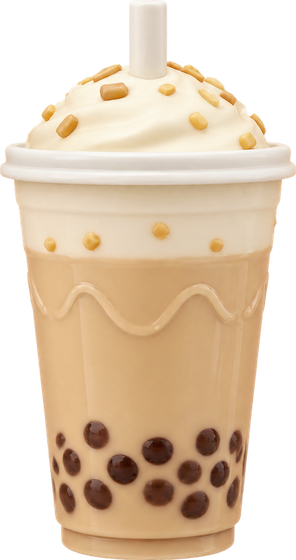
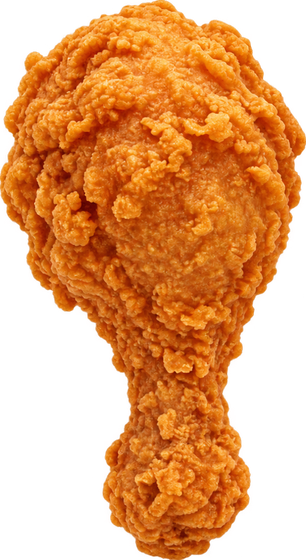

✦ 欢迎来到零食乐园 离线畅玩
奶龙开饭啦！
45 秒美食大挑战 / 美味，是最快乐的超能力。
剩余时间45 秒
慢慢瞄准，抓住美味当前美味值0
目标 120
美食已经准备好了
✦ 看准方向，再伸舌头。美食回到嘴里才计分。空格 出舌 · Esc 暂停

奶茶+10
炸鸡腿+15彩虹冰淇淋+20
汉堡+25
苦瓜−10 · 打结 1 秒
45 秒美食大挑战 / 美味，是最快乐的超能力。

奶茶+10
炸鸡腿+15